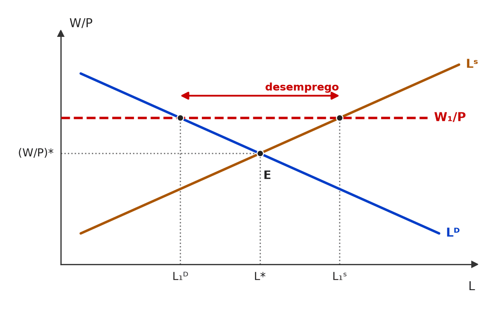
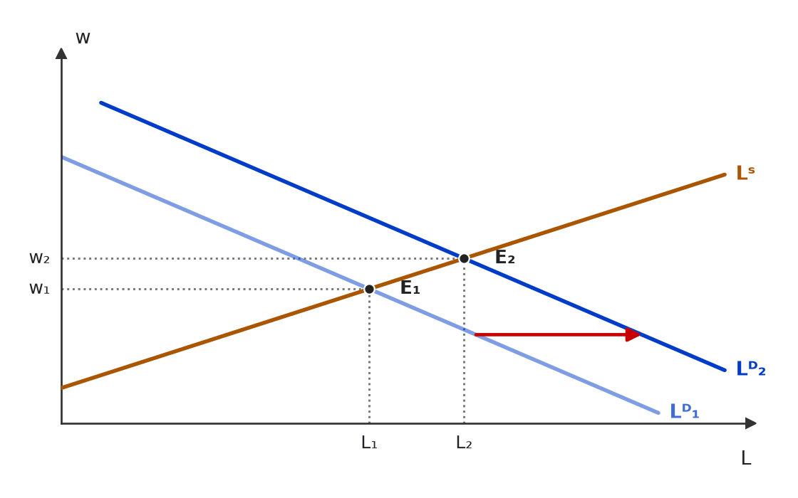
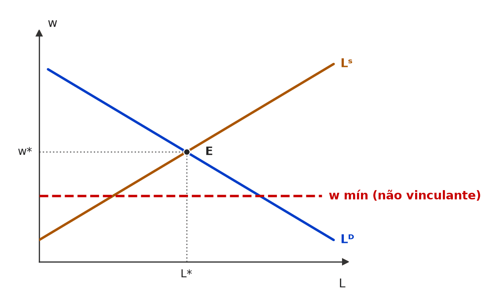
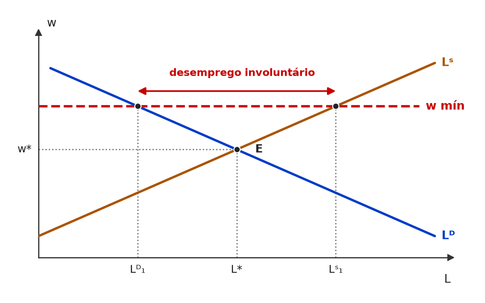

[C/E - CEBRASPE › TJ/PA/2025 › Desemprego e mercado de trabalho]Considerando essa situação hipotética, julgue o item que se segue, em relação aos efeitos macroeconômicos de choques salariais e fiscais, e de movimentos nos preços internos. Uma economia nacional opera com capital fixo no curto prazo e está sujeita a variações nominais de salários, preços internos e políticas fiscais expansionistas. O país adota um regime de taxa de câmbio fixa e mantém constante o nível de preços internacionais. Item: Se o salário nominal aumenta, mas o nível de preços permanece constante, o salário real também se mantém constante, e o equilíbrio do mercado de trabalho não é afetado. | ❌ ERRADO Se o salário nominal aumenta, mas o nível de preços permanece constante, o salário real também se mantém constante, e o equilíbrio do mercado de trabalho não é afetado. 🎯 Em poucas palavras: Salário real = W/P. Com W ↑ e P constante, W/P sobe: o trabalho fica mais caro, as firmas contratam menos e o mercado de trabalho sai do equilíbrio. 📖 Destrinchando o tema:
📈 No gráfico:  Com W maior e P constante, o salário real sobe de (W/P)* para W₁/P, acima do equilíbrio: as firmas demandam menos trabalho (L₁ᴰ) e mais pessoas querem trabalhar (L₁ˢ) — surge excesso de oferta de trabalho (desemprego). 🧐 Dissecando a redação do item: [troca de conceito · nexo indevido] Confunde salário nominal com salário real e tira daí a conclusão de que nada muda. Pista: “nominal aumenta” + “preços constantes” só admite uma resposta para W/P. O CEBRASPE costuma testar a versão neutra (W e P subindo juntos), que seria CERTO. 😈 Para dificultar:
✍️ Reescrita correta: Se o salário nominal aumenta, mas o nível de preços permanece constante, o salário real aumenta, e o equilíbrio do mercado de trabalho é afetado. |
[C/E - IDEG – Prof. Bozan › Pré-TPS/2026 › Desemprego e mercado de trabalho]Sobre os conceitos de desemprego, julgue a assertiva a seguir. Item: O desemprego sazonal ocorre quando existem variações na demanda de trabalho devido, por exemplo, às estações do ano, e é mais comum em segmentos como a agricultura e a indústria, onde a produção é altamente dependente das condições sazonais ou eventos programados periodicamente. | ✅ CERTO O desemprego sazonal ocorre quando existem variações na demanda de trabalho devido, por exemplo, às estações do ano, e é mais comum em segmentos como a agricultura e a indústria, onde a produção é altamente dependente das condições sazonais ou eventos programados periodicamente. 🎯 Em poucas palavras: Desemprego sazonal = oscilação previsível e recorrente da demanda por trabalho ao longo do ano (safra e entressafra, alta temporada, datas comemorativas). 📖 Destrinchando o tema:
🧐 Dissecando a redação do item: [paráfrase fiel] Definição de manual com exemplos plausíveis. A menção à “indústria” pode gerar dúvida, mas há indústrias de forte sazonalidade (alimentos, brinquedos, vestuário); o item não diz “exclusivamente”. 😈 Para dificultar:
|
❌ [C/E - IDEG – Prof. Bozan › Pré-TPS/2026 › Desemprego e mercado de trabalho]Sobre os conceitos de desemprego, julgue a assertiva a seguir. Item: O desemprego cíclico é gerado exclusivamente por mudanças permanentes nos padrões tecnológicos de produção, resultando em substituição de mão de obra por máquinas avançadas, afetando especialmente os trabalhadores que não conseguem adaptar-se rapidamente a novas tecnologias no mercado de trabalho. | ❌ ERRADO O desemprego cíclico é gerado exclusivamente por mudanças permanentes nos padrões tecnológicos de produção, resultando em substituição de mão de obra por máquinas avançadas, afetando especialmente os trabalhadores que não conseguem adaptar-se rapidamente a novas tecnologias no mercado de trabalho. 🎯 Em poucas palavras: O item descreve o desemprego estrutural (tecnológico) e o rotula de cíclico. O cíclico vem das recessões — queda da demanda agregada — e é temporário. 📖 Destrinchando o tema:
🧐 Dissecando a redação do item: [troca de conceito · modulador absoluto] Definição correta do estrutural com o rótulo trocado, reforçada por um “exclusivamente”. Leia o adjetivo do sujeito antes do resto: o predicado é que denuncia o tipo. 😈 Para dificultar:
✍️ Reescrita correta: O desemprego estrutural é gerado, entre outras causas, por mudanças permanentes nos padrões tecnológicos de produção, resultando em substituição de mão de obra por máquinas avançadas, afetando especialmente os trabalhadores que não conseguem adaptar-se rapidamente a novas tecnologias no mercado de trabalho. |
[C/E - IDEG – Prof. Bozan › Pré-TPS/2026 › Desemprego e mercado de trabalho]Sobre os conceitos de desemprego, julgue a assertiva a seguir. Item: O desemprego friccional ocorre naturalmente no pleno emprego dos fatores e reflete um período de transição para os trabalhadores que estão trocando de empregos ou buscando novas oportunidades. | ✅ CERTO O desemprego friccional ocorre naturalmente no pleno emprego dos fatores e reflete um período de transição para os trabalhadores que estão trocando de empregos ou buscando novas oportunidades. 🎯 Em poucas palavras: Pleno emprego não é desemprego zero: mesmo nele há o friccional, fruto do tempo de busca e de casamento entre trabalhadores e vagas. 📖 Destrinchando o tema:
🧐 Dissecando a redação do item: [paráfrase fiel · contraintuitivo] Definição de manual. A armadilha é a intuição de que “pleno emprego” significa todos empregados; o “naturalmente” remete à taxa natural. 😈 Para dificultar:
|
[C/E - IDEG – Prof. Bozan › Pré-TPS/2026 › Desemprego e mercado de trabalho]Sobre os conceitos de desemprego, julgue a assertiva a seguir. Item: O conceito de desemprego estrutural aplica-se adequadamente aos momentos em que a economia enfrenta uma recessão, forçando as empresas a reduzir seu quadro de funcionários devido a uma queda na demanda por bens e serviços, caracterizando um desequilíbrio temporário e reversível no mercado de trabalho. | ❌ ERRADO O conceito de desemprego estrutural aplica-se adequadamente aos momentos em que a economia enfrenta uma recessão, forçando as empresas a reduzir seu quadro de funcionários devido a uma queda na demanda por bens e serviços, caracterizando um desequilíbrio temporário e reversível no mercado de trabalho. 🎯 Em poucas palavras: Recessão + queda da demanda + temporário e reversível = desemprego cíclico. O estrutural é persistente e nasce de mudanças na estrutura produtiva. 📖 Destrinchando o tema:
🧐 Dissecando a redação do item: [troca de conceito] Descrição perfeita do cíclico com o rótulo trocado. O item ainda oferece as pistas contra si mesmo: “recessão”, “queda na demanda”, “temporário e reversível”. 😈 Para dificultar:
✍️ Reescrita correta: O conceito de desemprego cíclico aplica-se adequadamente aos momentos em que a economia enfrenta uma recessão, forçando as empresas a reduzir seu quadro de funcionários devido a uma queda na demanda por bens e serviços, caracterizando um desequilíbrio temporário e reversível no mercado de trabalho. |
[C/E - Nabuco › Pré-TPS/2024 › Desemprego e mercado de trabalho]Acerca dos indicadores do mercado de trabalho, conceitos e tipos de desemprego, julgue o item a seguir. Item: Quando há inovação tecnológica em um segmento da economia, gerando aumento da produtividade, sem que ocorra aumento de emprego em outros segmentos, tem-se o desemprego denominado estrutural. | ✅ CERTO Quando há inovação tecnológica em um segmento da economia, gerando aumento da produtividade, sem que ocorra aumento de emprego em outros segmentos, tem-se o desemprego denominado estrutural. 🎯 Em poucas palavras: Inovação que poupa trabalho num setor, sem absorção dos trabalhadores em outros, gera desemprego estrutural na variante tecnológica. 📖 Destrinchando o tema:
🧐 Dissecando a redação do item: [paráfrase fiel · detalhe] Item CERTO cuidadoso: a ressalva “sem aumento de emprego em outros segmentos” afasta a objeção de que a inovação cria empregos alhures. Sem ela, a afirmação seria discutível. 😈 Para dificultar:
|
[C/E - Nabuco › Pré-TPS/2024 › Desemprego e mercado de trabalho]Acerca dos indicadores do mercado de trabalho, conceitos e tipos de desemprego, julgue o item a seguir. Item: Quando um trabalhador demora para encontrar uma vaga de trabalho devido apenas a custos de locomoção e procura, tem-se o desemprego denominado cíclico. | ❌ ERRADO Quando um trabalhador demora para encontrar uma vaga de trabalho devido apenas a custos de locomoção e procura, tem-se o desemprego denominado cíclico. 🎯 Em poucas palavras: Demora causada só por custos de busca e locomoção é desemprego friccional. O cíclico vem da queda da demanda agregada nas recessões. 📖 Destrinchando o tema:
🧐 Dissecando a redação do item: [troca de conceito] A situação descrita é friccional de manual; o rótulo foi trocado pelo tipo mais famoso. Pergunte sempre: falta vaga (cíclico/estrutural) ou falta o encontro (friccional)? 😈 Para dificultar:
✍️ Reescrita correta: Quando um trabalhador demora para encontrar uma vaga de trabalho devido apenas a custos de locomoção e procura, tem-se o desemprego denominado friccional. |
[C/E - Nabuco › Pré-TPS/2024 › Desemprego e mercado de trabalho]Acerca dos indicadores do mercado de trabalho, conceitos e tipos de desemprego, julgue o item a seguir. Item: O programa de seguro-desemprego reduz o desemprego friccional, visto que os trabalhadores desempregados recebem, durante certo período de tempo, parte do salário que recebiam no seu último emprego. | ❌ ERRADO O programa de seguro-desemprego reduz o desemprego friccional, visto que os trabalhadores desempregados recebem, durante certo período de tempo, parte do salário que recebiam no seu último emprego. 🎯 Em poucas palavras: Com renda durante a busca, o trabalhador pode procurar por mais tempo e recusar ofertas: o seguro-desemprego tende a aumentar o desemprego friccional. 📖 Destrinchando o tema:
🧐 Dissecando a redação do item: [inversão · nexo indevido] Fato verdadeiro (o trabalhador recebe parte do salário) usado para sustentar a conclusão oposta à da teoria. Pista: renda durante o desemprego diminui a urgência de aceitar a primeira oferta. 😈 Para dificultar:
✍️ Reescrita correta: O programa de seguro-desemprego tende a aumentar o desemprego friccional, visto que os trabalhadores desempregados recebem, durante certo período de tempo, parte do salário que recebiam no seu último emprego. |
[C/E - Nabuco › Pré-TPS/2023 › Desemprego e mercado de trabalho]Acerca do nível de desemprego e seus tipos, julgue o item a seguir. Item: Desemprego estrutural compõe a taxa natural de desemprego; desemprego friccional não compõe a taxa natural de desemprego. | ❌ ERRADO Desemprego estrutural compõe a taxa natural de desemprego; desemprego friccional não compõe a taxa natural de desemprego. 🎯 Em poucas palavras: A taxa natural é a soma do desemprego friccional e do estrutural: só o cíclico fica de fora. 📖 Destrinchando o tema:
🧐 Dissecando a redação do item: [meia-verdade] A primeira oração está certa; a segunda exclui justamente o componente mais “natural” de todos. Pista: o item separa os dois tipos que os manuais sempre apresentam juntos como formadores da taxa natural. 🔥 A banca costuma trocar o cíclico por um dos outros dois. 😈 Para dificultar:
✍️ Reescrita correta: Desemprego estrutural compõe a taxa natural de desemprego; desemprego friccional também compõe a taxa natural de desemprego. |
[C/E - Nabuco › Pré-TPS/2023 › Desemprego e mercado de trabalho]Acerca do nível de desemprego e seus tipos, julgue o item a seguir. Item: A taxa natural de desemprego pode ser conceituada como a taxa de desemprego do pleno emprego ou de longo prazo. | ✅ CERTO A taxa natural de desemprego pode ser conceituada como a taxa de desemprego do pleno emprego ou de longo prazo. 🎯 Em poucas palavras: A taxa natural é o desemprego que persiste com a economia no produto potencial — o “pleno emprego” possível — e para o qual ela converge no longo prazo. 📖 Destrinchando o tema:
🧐 Dissecando a redação do item: [paráfrase fiel · modulador relativo] Item conceitual, salvo pelo “pode ser conceituada”. O risco é o candidato achar que “pleno emprego” significa desemprego zero e marcar ERRADO. Lembre: pleno emprego = desemprego só friccional e estrutural. 😈 Para dificultar:
|
[C/E - Nabuco › Pré-TPS/2023 › Desemprego e mercado de trabalho]Acerca do nível de desemprego e seus tipos, julgue o item a seguir. Item: Benefícios aos trabalhadores desempregados, tais como o programa de seguro-desemprego, reduzem o desemprego friccional, visto que os trabalhadores desempregados recebem, durante certo período de tempo, parte do salário que recebiam no seu último emprego. | ❌ ERRADO Benefícios aos trabalhadores desempregados, tais como o programa de seguro-desemprego, reduzem o desemprego friccional, visto que os trabalhadores desempregados recebem, durante certo período de tempo, parte do salário que recebiam no seu último emprego. 🎯 Em poucas palavras: O seguro-desemprego aumenta o desemprego friccional: ao reduzir o custo de ficar sem trabalho, alonga a busca por um novo emprego. 📖 Destrinchando o tema:
🧐 Dissecando a redação do item: [inversão] Premissa verdadeira, conclusão invertida: o item usa o fato certo (o benefício substitui parte do salário) para defender o efeito errado. Pista: pergunte-se o que acontece com o incentivo a procurar quando ficar desempregado custa menos. 😈 Para dificultar:
✍️ Reescrita correta: Benefícios aos trabalhadores desempregados, tais como o programa de seguro-desemprego, aumentam o desemprego friccional, visto que os trabalhadores desempregados recebem, durante certo período de tempo, parte do salário que recebiam no seu último emprego. |
[C/E - Prof. Rodrigo Teixeira › Intensivo Pré-TPS/2023 › Desemprego e mercado de trabalho]Julgue o item seguinte, a respeito da relação entre inflação e desemprego na macroeconomia. Item: As pessoas que desistiram de procurar emprego na pandemia, os chamados desalentados, não fazem parte da população economicamente ativa, não sendo contabilizados como desempregados na estatística oficial do IBGE. | ✅ CERTO As pessoas que desistiram de procurar emprego na pandemia, os chamados desalentados, não fazem parte da população economicamente ativa, não sendo contabilizados como desempregados na estatística oficial do IBGE. 🎯 Em poucas palavras: Desocupado é quem procurou trabalho e está disponível. O desalentado quer trabalhar, mas desistiu de procurar: fica fora da força de trabalho e não entra na taxa de desocupação. 📖 Destrinchando o tema:
🧐 Dissecando a redação do item: [literalidade] Reproduz a definição oficial. O risco é a intuição: “quem quer trabalhar e não trabalha é desempregado”. Para o IBGE, o critério decisivo é a procura efetiva. A banca também cobra o efeito do desalento sobre a taxa (“mascara” o desemprego). 😈 Para dificultar:
|
[C/E - Prof. Rodrigo Teixeira › Intensivo Pré-TPS/2023 › Desemprego e mercado de trabalho]Com relação à oferta agregada, aos salários, aos preços e ao emprego, julgue o item a seguir. Item: No longo-prazo, os salários são flexíveis e portanto a taxa natural de desemprego é nula. | ❌ ERRADO No longo-prazo, os salários são flexíveis e portanto a taxa natural de desemprego é nula. 🎯 Em poucas palavras: Salários flexíveis eliminam o desemprego cíclico, não o friccional nem o estrutural: a taxa natural é positiva. 📖 Destrinchando o tema:
🧐 Dissecando a redação do item: [nexo indevido · meia-verdade] Premissa correta + “portanto” + conclusão falsa. O examinador confunde “desemprego cíclico nulo” com “taxa natural nula”. Pista: o conector conclusivo ligando flexibilidade de preço a desemprego zero — flexibilidade não cria informação perfeita. 😈 Para dificultar:
✍️ Reescrita correta: No longo-prazo, os salários são flexíveis e ainda assim a taxa natural de desemprego é positiva. |
[C/E - Prof. Rodrigo Teixeira › Intensivo Pré-TPS/2023 › Desemprego e mercado de trabalho]Durante a pandemia, a taxa de desemprego aumentou muito no Brasil e em todo o mundo. A respeito dos conceitos de desemprego e das suas relações com a inflação e a atividade econômica, julgue o item a seguir. Item: Uma pessoa que deixa seu emprego para se dedicar aos estudos para um concurso público faz parte dos desempregados pela metodologia das estatísticas oficiais. | ❌ ERRADO Uma pessoa que deixa seu emprego para se dedicar aos estudos para um concurso público faz parte dos desempregados pela metodologia das estatísticas oficiais. 🎯 Em poucas palavras: Quem não procura trabalho não é desocupado: o concurseiro em dedicação exclusiva está fora da força de trabalho. 📖 Destrinchando o tema:
🧐 Dissecando a redação do item: [troca de conceito] Confunde “estar sem emprego” com “estar desempregado” no sentido estatístico. Pista: o item não diz que a pessoa procura trabalho — e o motivo da saída (estudar) indica que não procura. 🔥 A banca alterna os casos-limite: desalentado, estudante, quem trabalha poucas horas (ocupado), quem aguarda resposta de seleção. 😈 Para dificultar:
✍️ Reescrita correta: Uma pessoa que deixa seu emprego para se dedicar aos estudos para um concurso público não faz parte dos desempregados, e sim da população fora da força de trabalho, pela metodologia das estatísticas oficiais. |
[C/E - Clio › Clio 04/2022 › Desemprego e mercado de trabalho]Acerca do mercado de trabalho e do desemprego, julgue o item a seguir. Item: A redução da população desocupada em uma economia garante uma retração na taxa de desocupação dessa economia. | ❌ ERRADO A redução da população desocupada em uma economia garante uma retração na taxa de desocupação dessa economia. 🎯 Em poucas palavras: A taxa é uma razão: D ÷ (O + D). Se os ocupados caírem proporcionalmente mais que os desocupados, a taxa sobe mesmo com menos desocupados. 📖 Destrinchando o tema:
🧐 Dissecando a redação do item: [modulador absoluto] A direção “normal” (menos desocupados → taxa menor) é a mais comum; o erro está no “garante”, que transforma tendência em certeza. 🔥 Itens de taxa × nível absoluto são frequentes em estatísticas de trabalho. 😈 Para dificultar:
✍️ Reescrita correta: A redução da população desocupada em uma economia não garante uma retração na taxa de desocupação dessa economia. |
❌ [C/E - Clio › Clio 04/2022 › Desemprego e mercado de trabalho]Acerca do mercado de trabalho e do desemprego, julgue o item a seguir. Item: A elevação da produtividade marginal do trabalho tende a reduzir a demanda por trabalho, uma vez que agora cada trabalhador contribui com uma parcela maior do nível total de produção. | ❌ ERRADO A elevação da produtividade marginal do trabalho tende a reduzir a demanda por trabalho, uma vez que agora cada trabalhador contribui com uma parcela maior do nível total de produção. 🎯 Em poucas palavras: A demanda por trabalho é a curva do valor do produto marginal (P × PMgL). Se cada trabalhador produz mais, contratá-lo rende mais: a demanda aumenta. 📖 Destrinchando o tema:
📈 No gráfico:  A demanda por trabalho é a curva do valor do produto marginal (P × PMgL): se a PMgL sobe, cada trabalhador rende mais à firma e a demanda se desloca para a DIREITA (Lᴰ₁ → Lᴰ₂), elevando emprego e salário. 🧐 Dissecando a redação do item: [inversão · nexo indevido] A justificativa do item é verdadeira (cada trabalhador contribui mais), mas a conclusão é invertida. Pista: “contribui com uma parcela maior” é razão para contratar mais, não menos. 😈 Para dificultar:
✍️ Reescrita correta: A elevação da produtividade marginal do trabalho tende a elevar a demanda por trabalho, uma vez que agora cada trabalhador contribui com uma parcela maior do nível total de produção. |
❌ [C/E - Clio › Clio 04/2022 › Desemprego e mercado de trabalho]Acerca do mercado de trabalho e do desemprego, julgue o item a seguir. Item: A imposição de um salário mínimo em nível inferior ao salário de equilíbrio não terá efeito sobre a alteração da taxa de desemprego dessa economia. | ✅ CERTO A imposição de um salário mínimo em nível inferior ao salário de equilíbrio não terá efeito sobre a alteração da taxa de desemprego dessa economia. 🎯 Em poucas palavras: Um piso abaixo do equilíbrio não é vinculante: o mercado já paga mais que o mínimo, e emprego e salário continuam em (L*, w*). 📖 Destrinchando o tema:
📈 No gráfico:  Salário mínimo abaixo do equilíbrio (w mín < w*) não “morde”: o mercado continua em E, com o mesmo emprego L* e o mesmo salário w* — nenhum efeito sobre o desemprego. 🧐 Dissecando a redação do item: [detalhe · contraintuitivo] Quem associa automaticamente salário mínimo a desemprego marca ERRADO. A palavra decisiva é “inferior”: piso abaixo do equilíbrio é inócuo. 😈 Para dificultar:
|
[C/E - Banca não identificada › Desemprego e mercado de trabalho]Acerca do desemprego e do funcionamento do mercado de trabalho, julgue o item a seguir. Item: Um indivíduo que trabalhava em determinado banco pediu demissão do emprego, a fim de estudar para um concurso de seu estado; nesse caso, ele seria incluído na categoria do desemprego natural. | ✅ CERTO Um indivíduo que trabalhava em determinado banco pediu demissão do emprego, a fim de estudar para um concurso de seu estado; nesse caso, ele seria incluído na categoria do desemprego natural. 🎯 Em poucas palavras: Quem sai do emprego por escolha está em desemprego voluntário — que, junto com o friccional, compõe o desemprego natural, e não o cíclico ou involuntário. 📖 Destrinchando o tema:
🧐 Dissecando a redação do item: [paráfrase fiel · detalhe] O “pediu demissão” é a pista do caráter voluntário. A dúvida está em saber se o voluntário integra a taxa natural — integra, na tradição clássica e friedmaniana. 😈 Para dificultar:
|
[C/E - Banca não identificada › Desemprego e mercado de trabalho]Acerca do mercado de trabalho e das estatísticas de emprego e desemprego, julgue o item a seguir. Item: Um diplomata do Ministério de Relações Exteriores é considerado como ocupado, entre as pessoas na força de trabalho, ainda que não tenha carteira assinada. | ✅ CERTO Um diplomata do Ministério de Relações Exteriores é considerado como ocupado, entre as pessoas na força de trabalho, ainda que não tenha carteira assinada. 🎯 Em poucas palavras: Ocupação não depende de carteira: o diplomata é servidor estatutário e entra entre os ocupados na posição de empregado no setor público. 📖 Destrinchando o tema:
🧐 Dissecando a redação do item: [detalhe · contraintuitivo] A banca aposta na confusão entre “ter carteira” e “estar ocupado”. O “ainda que” convida a pensar em exceção; não há: o critério de ocupação é ter trabalhado, não o vínculo. 😈 Para dificultar:
|
[C/E - Banca não identificada › Desemprego e mercado de trabalho]Acerca do desemprego e do funcionamento do mercado de trabalho, julgue o item a seguir. Item: Políticas de salário mínimo acima do nível de equilíbrio contribuem para o aumento do desemprego voluntário. | ❌ ERRADO Políticas de salário mínimo acima do nível de equilíbrio contribuem para o aumento do desemprego voluntário. 🎯 Em poucas palavras: Com o salário mínimo acima do equilíbrio, há gente disposta a trabalhar pelo salário vigente sem encontrar vaga: o desemprego criado é involuntário. 📖 Destrinchando o tema:
📈 No gráfico:  Com o salário mínimo acima do equilíbrio (w mín > w*), as firmas contratam menos (Lᴰ) e mais pessoas querem trabalhar (Lˢ): a diferença é desemprego INVOLUNTÁRIO — gente disposta a trabalhar ao salário vigente sem encontrar vaga. 🧐 Dissecando a redação do item: [troca de conceito] O mecanismo (salário mínimo vinculante gera desemprego) está certo; o erro está só no adjetivo. Pergunta-teste: o desempregado aceitaria trabalhar pelo salário vigente? Se sim, é involuntário. 😈 Para dificultar:
✍️ Reescrita correta: Políticas de salário mínimo acima do nível de equilíbrio contribuem para o aumento do desemprego involuntário. |
[C/E - Banca não identificada › Desemprego e mercado de trabalho]Acerca do mercado de trabalho e das estatísticas de emprego e desemprego, julgue o item a seguir. Item: Em decorrência da metodologia utilizada pelo IBGE, é possível que haja diminuição do número de desocupados durante conjuntura econômica recessiva. | ✅ CERTO Em decorrência da metodologia utilizada pelo IBGE, é possível que haja diminuição do número de desocupados durante conjuntura econômica recessiva. 🎯 Em poucas palavras: Para o IBGE, só é desocupado quem procurou trabalho. Na recessão, parte dos sem-emprego desiste de procurar (desalento) e sai da força de trabalho: o número de desocupados pode cair sem que ninguém tenha sido contratado. 📖 Destrinchando o tema:
🧐 Dissecando a redação do item: [contraintuitivo · modulador relativo] Parece absurdo (recessão reduzindo desocupados), mas o “é possível” e a referência à metodologia apontam para o efeito estatístico do desalento. 🔥 Tema recorrente: desocupado exige procura. 😈 Para dificultar:
|
❌ [C/E - Banca não identificada › Desemprego e mercado de trabalho]Acerca do desemprego e do funcionamento do mercado de trabalho, julgue o item a seguir. Item: As causas do desemprego natural, decorrente do tempo necessário para que o mercado de trabalho se ajuste, incluem a desinformação e a falta de mobilidade dos agentes que ofertam e buscam trabalho. | ❌ ERRADO As causas do desemprego natural, decorrente do tempo necessário para que o mercado de trabalho se ajuste, incluem a desinformação e a falta de mobilidade dos agentes que ofertam e buscam trabalho. 🎯 Em poucas palavras: Gabarito ERRADO pela leitura de que o desemprego natural (friccional) decorre da mobilidade — da troca de empregos —, e não da falta dela. Leitura frágil: ver ⚠️. ⚠️ Gabarito contestável: mantido o ERRADO da fonte. Pelos manuais (Mankiw, Blanchard), o desemprego friccional — componente da taxa natural — existe porque a informação sobre vagas e candidatos é imperfeita e a realocação entre setores e regiões leva tempo; a baixa mobilidade geográfica e de qualificações alimenta o estrutural, também parte da taxa natural. Nessa leitura, o item seria defensável como CERTO. A justificativa usual do ERRADO confunde a mobilidade, que gera rotatividade, com a fricção, que é a demora e o custo dessa mobilidade. 📖 Destrinchando o tema:
🧐 Dissecando a redação do item: [outro: gabarito por leitura restritiva] A banca construiu o item com as causas de manual do friccional e o considerou falso, ao que tudo indica, pela ideia de que o friccional nasce da mobilidade dos trabalhadores. Em prova, guarde as duas coisas: a rotatividade gera o friccional; desinformação e baixa mobilidade o prolongam. 😈 Para dificultar:
✍️ Reescrita correta: As causas do desemprego natural, decorrente do tempo necessário para que o mercado de trabalho se ajuste, incluem a rotatividade normal entre empregos e o descompasso entre as qualificações dos trabalhadores e as exigências das vagas. |
❌ [C/E - Banca não identificada › Desemprego e mercado de trabalho]Acerca do mercado de trabalho e das estatísticas de emprego e desemprego, julgue o item a seguir. Item: Uma das principais diferenças entre a Pesquisa Mensal de Emprego (PME) e a Pesquisa Nacional por Amostra de Domicílios Contínua (PNAD-Contínua) – pesquisas periódicas sobre mercado de trabalho no Brasil realizadas pelo IBGE – reside no fato de a PNAD-Contínua ser mais abrangente do ponto de vista geográfico que a PME. | ✅ CERTO Uma das principais diferenças entre a Pesquisa Mensal de Emprego (PME) e a Pesquisa Nacional por Amostra de Domicílios Contínua (PNAD-Contínua) – pesquisas periódicas sobre mercado de trabalho no Brasil realizadas pelo IBGE – reside no fato de a PNAD-Contínua ser mais abrangente do ponto de vista geográfico que a PME. 🎯 Em poucas palavras: A PME cobria só 6 regiões metropolitanas; a PNAD Contínua tem amostra nacional, com cerca de 3.500 municípios de todas as unidades da federação. 📖 Destrinchando o tema:
🧐 Dissecando a redação do item: [detalhe] Item de conhecimento institucional sobre as pesquisas do IBGE: o nome “Nacional” já indica a cobertura. A versão ERRADA inverteria a abrangência ou trocaria a diferença (periodicidade, idade de trabalhar). 😈 Para dificultar:
|
[C/E - CEBRASPE › ANTT/2023 › Lei de Okun]Julgue o próximo item, tendo em vista os modelos macroeconômicos para economias abertas. Item: A lei de Okun estabelece que o aumento do produto de equilíbrio gera redução do desemprego. | ✅ CERTO A lei de Okun estabelece que o aumento do produto de equilíbrio gera redução do desemprego. 🎯 Em poucas palavras: Okun = relação inversa entre produto e desemprego: produzir mais exige mais trabalho, e o desemprego cai. 📖 Destrinchando o tema:
🧐 Dissecando a redação do item: [paráfrase fiel] Enunciado simples, sem modulador, que descreve o sentido da relação. O risco é o excesso de zelo: “produto de equilíbrio” pode parecer produto potencial, e “estabelece” parece forte para uma regularidade empírica. Para o CEBRASPE, basta o sentido correto da relação. 😈 Para dificultar:
|
[C/E - Clipping › Simuladão Março/2026 › Lei de Okun]Acerca da relação entre produto e desemprego, julgue o item a seguir. Item: A Lei de Okun estabelece uma relação positiva entre crescimento econômico e desemprego: quanto maior o crescimento do PIB, maior será o aumento da taxa de desemprego. | ❌ ERRADO A Lei de Okun estabelece uma relação positiva entre crescimento econômico e desemprego: quanto maior o crescimento do PIB, maior será o aumento da taxa de desemprego. 🎯 Em poucas palavras: A relação é negativa: quanto mais o PIB cresce acima do potencial, mais cai o desemprego; crescimento fraco ou negativo o faz subir. 📖 Destrinchando o tema:
🧐 Dissecando a redação do item: [inversão] Inverte o sinal duas vezes, de forma coerente (“positiva” e “maior aumento”), o que dá falsa consistência interna. Basta lembrar que crescer exige contratar. 😈 Para dificultar:
✍️ Reescrita correta: A Lei de Okun estabelece uma relação negativa entre crescimento econômico e desemprego: quanto maior o crescimento do PIB, maior será a redução da taxa de desemprego. |
❌ [C/E - Clipping › Simulado Ago/2024 › Lei de Okun]Acerca da relação entre produto e desemprego, julgue o item a seguir. Item: A Lei de Okun estabelece uma relação empírica entre o crescimento econômico e a variação na taxa de desemprego, sugerindo que um aumento no PIB é acompanhado por um aumento na taxa de desemprego. | ❌ ERRADO A Lei de Okun estabelece uma relação empírica entre o crescimento econômico e a variação na taxa de desemprego, sugerindo que um aumento no PIB é acompanhado por um aumento na taxa de desemprego. 🎯 Em poucas palavras: A relação de Okun é inversa: crescimento do PIB (acima da tendência) vem acompanhado de queda do desemprego. 📖 Destrinchando o tema:
🧐 Dissecando a redação do item: [inversão] Começa com uma definição correta (“relação empírica”) e troca o sinal no final. Pista lógica: crescer exige mais trabalhadores, não menos. 😈 Para dificultar:
✍️ Reescrita correta: A Lei de Okun estabelece uma relação empírica entre o crescimento econômico e a variação na taxa de desemprego, sugerindo que um aumento no PIB é acompanhado por uma redução na taxa de desemprego. |
[C/E - Nabuco › Pré-TPS/2023 › Lei de Okun]Acerca do nível de desemprego e seus tipos, julgue o item a seguir. Item: De acordo com a Lei de Okun, um aumento de 1% no PIB está associado a uma redução de 1% na taxa de desemprego. | ❌ ERRADO De acordo com a Lei de Okun, um aumento de 1% no PIB está associado a uma redução de 1% na taxa de desemprego. 🎯 Em poucas palavras: A Lei de Okun dá uma relação inversa entre produto e desemprego, mas não unitária: o coeficiente é estimado (nos EUA, algo como 0,4–0,5) e varia por país e período. 📖 Destrinchando o tema:
🧐 Dissecando a redação do item: [dado alterado] O item acerta o sentido (PIB ↑, desemprego ↓) e inventa a magnitude: “1% → 1%” transforma uma regularidade estatística em identidade. Pista: números redondos e simétricos em relação empírica costumam ser fabricados. A banca também explora a mistura de unidades (% do PIB × pontos percentuais de desemprego). 😈 Para dificultar:
✍️ Reescrita correta: De acordo com a Lei de Okun, um aumento de 1% no PIB está associado a uma redução de menos de 1 ponto percentual (nos EUA, cerca de 0,4 a 0,5 ponto por ponto de crescimento acima do normal) na taxa de desemprego. |
❌ [C/E - Prof. Rodrigo Teixeira › Intensivo Pré-TPS/2023 › Lei de Okun]Durante a pandemia, a taxa de desemprego aumentou muito no Brasil e em todo o mundo. A respeito dos conceitos de desemprego e das suas relações com a inflação e a atividade econômica, julgue o item a seguir. Item: A lei de Okun mostra que um aumento do hiato do produto levará a uma redução da taxa de inflação. | ❌ ERRADO A lei de Okun mostra que um aumento do hiato do produto levará a uma redução da taxa de inflação. 🎯 Em poucas palavras: A Lei de Okun liga produto e desemprego; quem liga atividade e inflação é a curva de Phillips. 📖 Destrinchando o tema:
🧐 Dissecando a redação do item: [troca de conceito] Atribui à Lei de Okun o objeto da curva de Phillips. Pista: “Okun” na frase + “inflação” na conclusão = troca de relação. 🔥 Itens desse bloco costumam embaralhar as três peças: Okun (produto–desemprego), Phillips (desemprego–inflação) e oferta agregada (produto–preços). 😈 Para dificultar:
✍️ Reescrita correta: A lei de Okun mostra que um aumento do hiato do produto levará a uma redução da taxa de desemprego. |
[C/E - Banca não identificada › Lei de Okun]Acerca da relação entre produto e desemprego, julgue o item a seguir. Item: De acordo com a lei de Okun, se o produto interno bruto se mantiver sempre igual ao produto potencial, a taxa de desemprego será igual a 0. | ❌ ERRADO De acordo com a lei de Okun, se o produto interno bruto se mantiver sempre igual ao produto potencial, a taxa de desemprego será igual a 0. 🎯 Em poucas palavras: Com o PIB no potencial, o desemprego fica na taxa natural — positiva, por causa do friccional e do estrutural —, não em zero. 📖 Destrinchando o tema:
🧐 Dissecando a redação do item: [troca de conceito · dado alterado] Confunde pleno emprego (desemprego na taxa natural) com desemprego nulo. Pista: “sempre igual ao potencial” descreve hiato zero, que corresponde a u = uₙ, nunca a u = 0. 😈 Para dificultar:
✍️ Reescrita correta: De acordo com a lei de Okun, se o produto interno bruto se mantiver sempre igual ao produto potencial, a taxa de desemprego será igual à taxa natural de desemprego. |